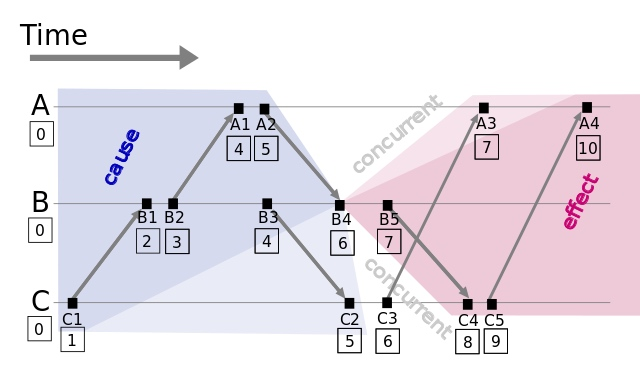
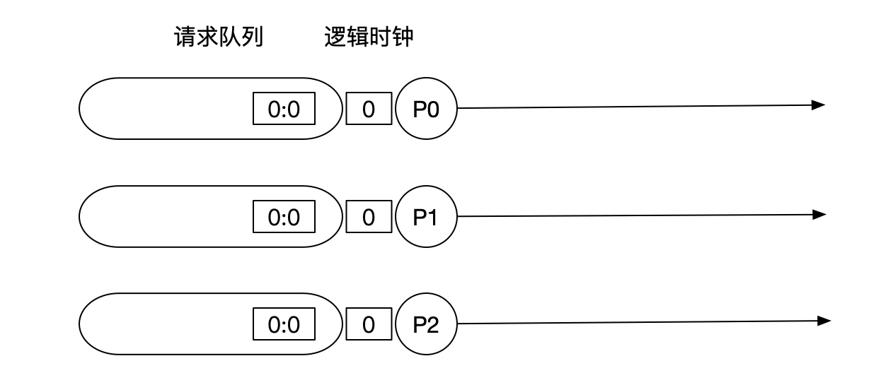
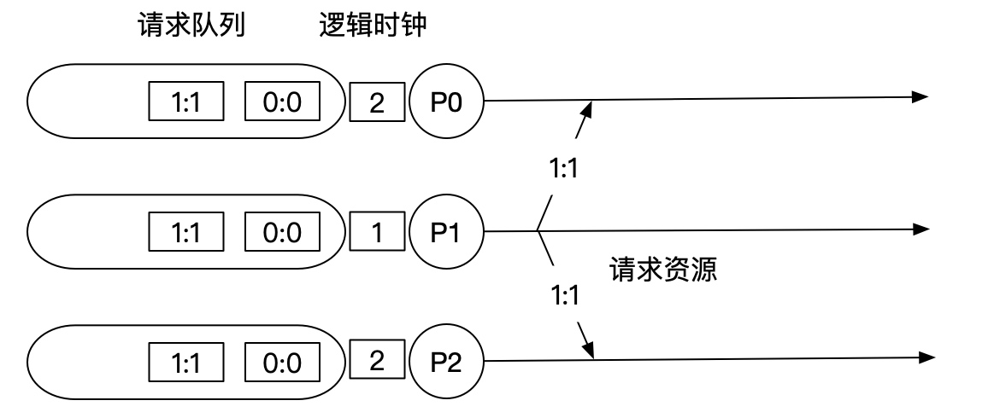
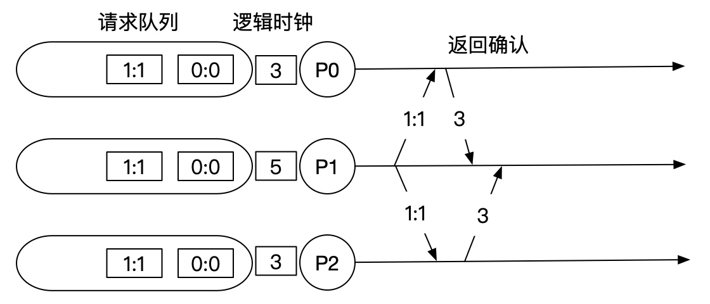
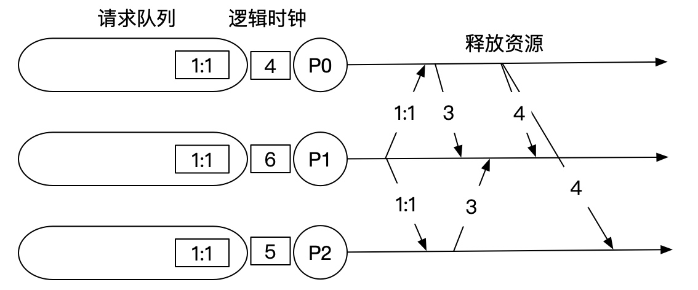

分布式系统解决了传统单体架构的单点问题和性能容量问题，另一方面也带来了很多的问题，其中一个问题就是多节点的时间同步问题：不同机器上的物理时钟难以同步，导致无法区分在分布式系统中多个节点的事件时序。1978年Lamport在《Time, Clocks and the Ordering of Events in a Distributed System》中提出了逻辑时钟的概念，来解决分布式系统中区分事件发生的时序问题。
什么是逻辑时钟
逻辑时钟是为了区分现实中的物理时钟提出来的概念，一般情况下我们提到的时间都是指物理时间，但实际上很多应用中，只要所有机器有相同的时间就够了，这个时间不一定要跟实际时间相同。更进一步，如果两个节点之间不进行交互，那么它们的时间甚至都不需要同步。因此问题的关键点在于节点间的交互要在事件的发生顺序上达成一致，而不是对于时间达成一致。
综上，逻辑时钟指的是分布式系统中用于区分事件的发生顺序的时间机制。从某种意义上讲，现实世界中的物理时间其实是逻辑时钟的特例。
为什么需要逻辑时钟
时间是在现实生活中是很重要的概念，有了时间我们就能比较事情发生的先后顺序。如果是单个计算机内执行的事务，由于它们共享一个计时器，所以能够很容易通过时间戳来区分先后。同理在分布式系统中也通过时间戳的方式来区分先后行不行？
答案是NO，因为在分布式系统中的不同节点间保持它们的时钟一致是一件不容易的事情。因为每个节点的CPU都有自己的计时器，而不同计时器之间会产生时间偏移，最终导致不同节点上面的时间不一致。也就是说如果A节点的时钟走的比B节点的要快1分钟，那么即使B先发出的消息（附带B的时间戳），A的消息（附带A的时间戳）在后一秒发出，A的消息也会被认为先于B发生。
那么是否可以通过某种方式来同步不同节点的物理时钟呢？答案是有的，NTP就是常用的时间同步算法，但是即使通过算法进行同步，总会有误差，这种误差在某些场景下（金融分布式事务）是不能接受的。
因此，Lamport提出逻辑时钟就是为了解决分布式系统中的时序问题，即如何定义a在b之前发生。值得注意的是，并不是说分布式系统只能用逻辑时钟来解决这个问题，如果以后有某种技术能够让不同节点的时钟完全保持一致，那么使用物理时钟来区分先后是一个更简单有效的方式。
如何实现逻辑时钟
时序关系与相对论
通过前面的讨论我们知道通过物理时钟（即绝对参考系）来区分先后顺序的前提是所有节点的时钟完全同步，但目前并不现实。因此，在没有绝对参考系的情况下，在一个分布式系统中，你无法判断事件A是否发生在事件B之前，除非A和B存在某种依赖关系，即分布式系统中的事件仅仅是部分有序的。
上面的结论跟狭义相对论有异曲同工之妙，在狭义相对论中，不同观察者在同一参考系中观察到的事件先后顺序是一致的，但是在不同的观察者在不同的参考系中对两个事件谁先发生可能具有不同的看法。当且仅当事件A是由事件B引起的时候，事件A和B之间才存在一个先后关系。两个事件可以建立因果关系的前提是：两个事件之间可以用等于或小于光速的速度传递信息。 值得注意的是这里的因果关系指的是时序关系，即时间的前后，并不是逻辑上的原因和结果。
那么是否我们可以参考狭义相对论来定义分布式系统中两个事件的时序呢？在分布式系统中，网络是不可靠的，所以我们去掉可以和速度的约束，可以得到两个事件可以建立因果（时序）关系的前提是：两个事件之间是否发生过信息传递。在分布式系统中，进程间通信的手段（共享内存、消息发送等）都属于信息传递，如果两个进程间没有任何交互，实际上他们之间内部事件的时序也无关紧要。但是有交互的情况下，特别是多个节点的要保持同一副本的情况下，事件的时序非常重要。
Lamport 逻辑时钟
分布式系统中按是否存在节点交互可分为三类事件，一类发生于节点内部，二是发送事件，三是接收事件。注意：以下文章中提及的时间戳如无特别说明，都指的是Lamport 逻辑时钟的时间戳，不是物理时钟的时间戳
逻辑时钟定义
Clock Condition.对于任意事件\(a\), \(b\)：如果\(a \to b\)（\(\to\)表示a先于b发生），那么\(C(a)< C(b)\), 反之不然, 因为有可能是并发事件
C1.如果\(a\)和\(b\)都是进程\(P_i\)里的事件，并且\(a\)在\(b\)之前，那么\(C_i(a) < C_i(b)\)
C2.如果\(a\)是进程\(P_i\)里关于某消息的发送事件，\(b\)是另一进程\(P_j\)里关于该消息的接收事件，那么\(C_i(a) < C_j(b)\)
Lamport 逻辑时钟原理如下：

- 每个事件对应一个Lamport时间戳，初始值为0
- 如果事件在节点内发生，本地进程中的时间戳加1
- 如果事件属于发送事件，本地进程中的时间戳加1并在消息中带上该时间戳
- 如果事件属于接收事件，本地进程中的时间戳 = Max(本地时间戳，消息中的时间戳) + 1
假设有事件\(a、b，C(a)、C(b)\)分别表示事件\(a、b\)对应的Lamport时间戳，如果\(a\)发生在\(b\)之前(happened before)，记作 \(a \to b\)，则有\(C(a) < C(b)\)，例如图1中有 \(C1 \to B1\)，那么 \(C(C1) < C(B1)\)。通过该定义，事件集中Lamport时间戳不等的事件可进行比较，我们获得事件的偏序关系(partial order)。注意：如果\(C(a) < C(b)\)，并不能说明\(a \to b\)，也就是说\(C(a) < C(b)\)是\(a \to b\)的必要不充分条件
如果\(C(a) = C(b)\)，那\(a、b\)事件的顺序又是怎样的？值得注意的是当\(C(a) = C(b)\)的时候，它们肯定不是因果关系，所以它们之间的先后其实并不会影响结果，我们这里只需要给出一种确定的方式来定义它们之间的先后就能得到全序关系。注意：Lamport逻辑时钟只保证因果关系（偏序）的正确性，不保证绝对时序的正确性。
一种可行的方式是利用给进程编号，利用进程编号的大小来排序。假设\(a、b\)分别在节点\(P、Q\)上发生，\(P_i、Q_j\)分别表示我们给\(P、Q\)的编号，如果 \(C(a) = C(b)\) 并且 \(P_i < Q_j\)，同样定义为\(a\)发生在\(b\)之前，记作 \(a \Rightarrow b\)（全序关系）。假如我们对图1的\(A、B、C\)分别编号\(A_i = 1、B_j = 2、C_k = 3\)，因 \(C(B4) = C(C3)\) 并且 \(B_j < C_k\)，则 \(B4 \Rightarrow C3\)。
通过以上定义，我们可以对所有事件排序，获得事件的全序关系(total order)。上图例子，我们可以进行排序：\(C1 \Rightarrow B1 \Rightarrow B2 \Rightarrow A1 \Rightarrow B3 \Rightarrow A2 \Rightarrow C2 \Rightarrow B4 \Rightarrow C3 \Rightarrow A3 \Rightarrow B5 \Rightarrow C4 \Rightarrow C5 \Rightarrow A4\)
观察上面的全序关系你可以发现，从时间轴来看\(B5\)是早于\(A3\)发生的，但是在全序关系里面我们根据上面的定义给出的却是\(A3\)早于\(B5\)，可以发现Lamport逻辑时钟是一个正确的算法，即有因果关系的事件时序不会错，但并不是一个公平的算法，即没有因果关系的事件时序不一定符合实际情况。
如何使用逻辑时钟解决分布式锁问题
上面的分析过于理论，下面我们来尝试使用逻辑时钟来解决分布式锁问题。
分布式锁问题本质上是对于共享资源的抢占问题，我们先对问题进行定义：
- 已经获得资源授权的进程，必须在资源分配给其他进程之前释放掉它；
- 资源请求必须按照请求发生的顺序进行授权；
- 在获得资源授权的所有进程最终释放资源后，所有的资源请求必须都已经被授权了。
首先我们假设，对于任意的两个进程\(P_i\)和\(P_j\)，它们之间传递的消息是按照发送顺序被接收到的, 并且所有的消息最终都会被接收到。
每个进程会维护一个它自己的对其他所有进程都不可见的请求队列。我们假设该请求队列初始时刻只有一个消息\((T_0:P_0)\)资源请求，\(P_0\)代表初始时刻获得资源授权的那个进程，\(T_0\)小于任意时钟初始值
- 为请求该项资源，进程\(P_i\)发送一个\((T_m:P_i)\)资源请求（请求锁）消息给其他所有进程，并将该消息放入自己的请求队列，在这里\(T_m\)代表了消息的时间戳
- 当进程\(P_j\)收到\((T_m:P_i)\)资源请求消息后，将它放到自己的请求队列中，并发送一个带时间戳的确认消息给\(P_i\)。(注：如果\(P_j\)已经发送了一个时间戳大于\(T_m\)的消息，那就可以不发送)
- 释放该项资源（释放锁）时，进程\(P_i\)从自己的消息队列中删除所有的\((T_m:P_i)\)资源请求，同时给其他所有进程发送一个带有时间戳的\(P_i\)资源释放消息
- 当进程\(P_j\)收到\(P_i\)资源释放消息后，它就从自己的消息队列中删除所有的\((T_m:P_i)\)资源请求
- 当同时满足如下两个条件时，就将资源分配（锁占用）给进程\(P_i\)：
- 按照全序关系排序后，\((T_m:P_i)\)资源请求排在它的请求队列的最前面
- \(i\)已经从所有其他进程都收到了时间戳>\(T_m\)的消息、
下面我会用图例来说明上面算法运作的过程，假设我们有3个进程，根据算法说明，初始化状态各个进程队列里面都是(0:0)状态，此时锁属于P0。

接下来P1会发出请求资源的消息给所有其他进程，并且放到自己的请求队列里面，根据逻辑时钟算法，P1的时钟走到1，而接受消息的P0和P2的时钟为消息时间戳+1。

收到P1的请求之后，P0和P2要发送确认消息给P1表示自己收到了。注意，由于目前请求队列里面第一个不是P1发出的请求，所以此时锁仍属于P0。但是由于收到了确认消息，此时P1已经满足了获取资源的第一个条件：P1已经收到了其他所有进程时间戳大于1的消息。

假设P0此时释放了锁（这里为了方便演示做了这个假设，实际上P0什么时候释放资源都可以，算法都是正确的，读者可自行推导），发送释放资源的消息给P1和P2，P1和P2收到消息之后把请求(0:0)从队列里面删除。

当P0释放了资源之后，我们发现P1满足了获取资源的两个条件：它的请求在队列最前面；P1已经收到了其他所有进程时间戳大于1的消息。也就是说此时P1就获取到了锁。
值得注意的是，这个算法并不是容错的，有一个进程挂了整个系统就挂了，因为需要等待所有其他进程的响应，同时对网络的要求也很高。
总结
如果你之前看过2PC，Paxos之类的算法，相信你看到最后一定会有一种似曾相识的感觉。实际上，Lamport提出的逻辑时钟可以说是分布式一致性算法的开山鼻祖，后续的所有分布式算法都有它的影子。我们不能想象现实世界中没有时间，而逻辑时钟定义了分布式系统里面的时间概念，解决了分布式系统中区分事件发生的时序问题。